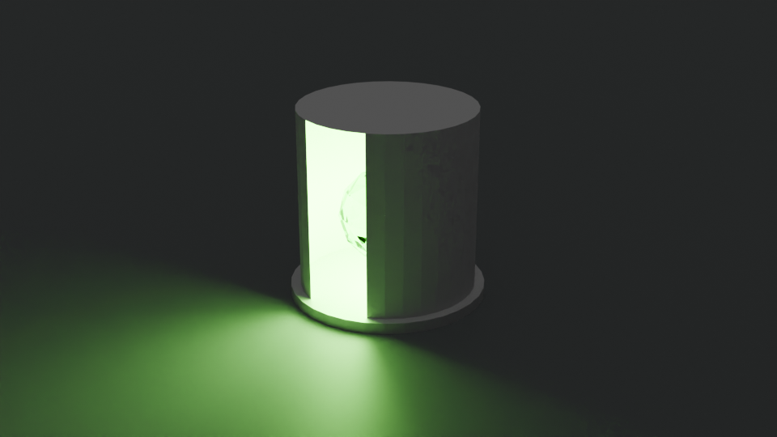

|
手機用戶建議橫屏觀看，體驗可能會更佳。
返回主頁
上一話————下一話
06. 第一卷後記
本作的第一卷就到目前為止，在這裡我想先稍微整理一下至今為止的劇情，也會稍微對一些設定作一定的補充。
首先，我想說一下自己寫這篇小說的契機：其實一切嘛…都是源自於一些突如其來的靈感，我突然有了一點想法，具體來講就是關於「吸血鬼在異世界掙扎求生的故事」。總之，我當晚就立即付諸實行，寫下了一個開頭。這次寫出來的開頭我自己是覺得不錯，就…很有那種…呃…(我詞窮了)
另外的原因就是由於我已經寫了一年的小說(當中有不少是未曾公開的，因為內容太瞎)，我的水準應該也有了一定程度的提升，所以我就打算寫一篇有些水準的小說，結果這篇就出來了。一開始並沒有標題，我想等內容多一點之後再想。而我這次寫的這篇小說，也在我的牧師(對，我是基督新教的)那獲得了一些認可，所以我自認為這次沒有寫崩。
然後對，又是異世界小說，異世界這個題材實在太好寫了(當然，要寫好這個題材，在眾多異世界小說之中脫穎而出，是有點難度的)。
好了，聽完我的廢話之後，讓我們先從第一話開始。
首先是關於「開燈」的問題，如果你們有仔細看的話，應該會在第二話知道這個世界並沒有電。那麼，這「燈」又是什麼回事呢？要解釋這個設定的話，我就得這樣說：這個世界的魔法，是普及大眾的，而其中就有一種魔法水晶，是會不斷發光的。把它裝進一個中空的柱體之中，開一個洞，就能當成一盞燈了，不需要使用的時候就用一片鐵片之類的擋住洞口，以下為示意圖：

接下來是埃撒巴斯卡鎮(Esabaskah)這個名字，Esabah在撒剌瓦語的含義是「布料」，而skah則只是一個用於城鎮的後綴之一，命名的典故是因為這個小鎮產布料。對於這個小鎮，由於主角們在第四話就已經被趕走，所以其實不太重要。在以後的劇情可能會再提及，不過我目前沒有打算讓這個小鎮再次出場。
接下來，我想稍微補充一下關於安德烈雅、奧克塔維亞和維娜雅的外表：
安德烈雅有著金色的長直髮，頭髮及胸，剛開場的時候穿著一套白色的連衣裙，裙擺及地，外貌看上去大概15來歲，貌美。到了和奧克塔維亞一起在埃撒巴斯卡鎮居住期間，她的衣服已經換成了當地的簡樸布衣，下身也換成了牛仔褲，天氣冷的話她會多穿一件褐色的毛皮大衣。由於她是吸血鬼的原因，她的皮膚顔色很白，但又沒有到一張白紙那樣的程度。她的指甲有點長，末端是尖的。至於她的牙齒，則和正常人無異，唯犬齒比常人的更長更尖，這是爲了吸血。到了第四話，奧克塔維亞買了一件黑色的連帽斗篷，安德烈雅在早上會穿著它，有時候在晚上也會穿（據本人的説法是因爲這件斗篷很酷）。
上一話————下一話
|